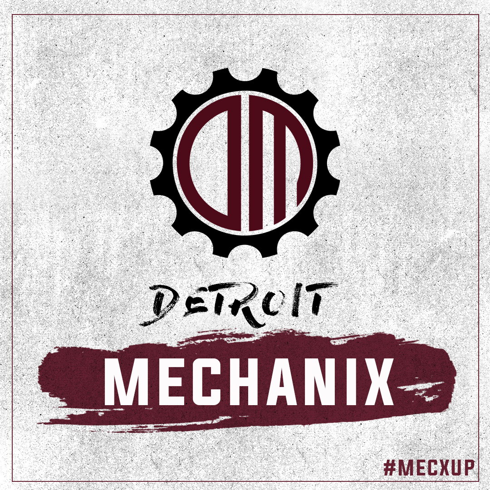

The Detroit Mechanix have one AUDL team they were founded in 2010, they're based in Grand Rapids Michigan. The Mechanix haven't won a game since 2017, and they currently play home games at Bishop Foley Catholic High School in Madison Heights.
Their team colors are black and burgundy, the mascot is Rusty the wrench. He is a huge wrench, literally. Their symbol is a gear with a backwards D and a curved M inside.The design being simple makes it easy to use on apparel.
